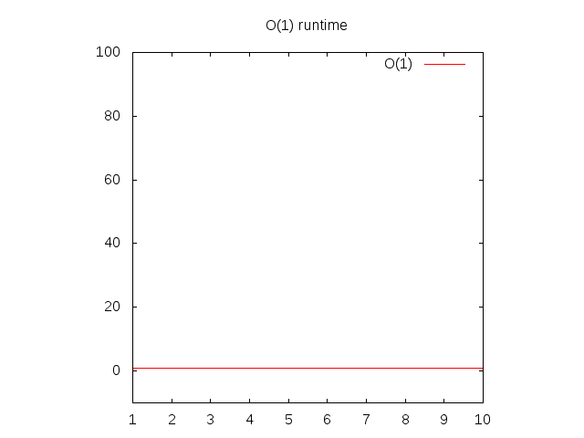

¿Qué son los algoritmos?
Los algoritmos son básicamente funciones.
Funciones que son algoritmos:
- Toma argumentos
- Devuelve explícitamente los valores
1.1 Ejemplo de un algoritmo
Algoritmo que cuenta el número de vocales en una palabra y devuelve el recuento:
function countVowels (word) {
var vowels span.azul = ['a', 'i', 'e', 'o', 'u'];
var count = 0;
for (var i = 0; i < word.length; i++) {
for (var j = 0; j < vowels.length; j++) {
if (word[i] === vowels[j]) {
count++;
}
}
}
return count;
}
¿Cuándo las funciones no son algoritmos?
Cuando escribe una función, puede o no puede
- Tener argumentos
- Devolver un valor
Las funciones que no toman argumentos o devuelven un valor generalmente se usan para secar código repetitivo, imprimir algo en la pantalla o servir como argumento para ejecutar más tarde. Estos tipos de funciones generalmente no se conocen como algoritmos.
1.2 Ejemplo de una función que no es un algoritmo
Una función anónima que se pasa a jQuery's on función.
$('button').on('click', function(){
alert('hi')
});
1.3 Ejemplo de una función que no es un algoritmo
Esta función no tiene argumentos, no tiene retorno
function clearDiv(){
$('#div').html("");
};
1.4 Ejemplo de una función que no es un algoritmo
Esta función tiene un argumento, pero no retorno
function clearDiv(text){
$('#div').text(text);
}
¿Qué es Big O?
Big O es la abreviatura de Big O Notiation.
Big O es cómo los programadores hablan sobre la escalabilidad de los algoritmos.
La notación Big O de un algoritmo está determinada por cuánto tiempo tarda el algoritmo en devolver la salida en el el peor de los casos.
El término matemático para el el peor de los casos es "límite superior".
Cómo dices O(n)
O(n) se lee como "Orden de N" o abreviatura de "O de N".
La función O es la función Orden.
¿Por qué se llama Big O?
Porque estamos lidiando con órdenes de magnitud. O se utiliza porque la tasa de crecimiento de una función también se conoce como el "orden de la función".
¿Por qué es importante Big O?
Comprender la Gran O de los algoritmos
- Te mete en la mentalidad de codificar para la eficiencia. Ex: "Tengo que cambiar este algoritmo porque es O(n!)!"
- Te ayuda a hablar de código con otros desarrolladores. Ex: "No te preocupes, cambié el algoritmo para que no sea O(n^2). Es O(n) ahora."
- Te ayuda para entrevistas. Podrá hablar sobre la eficiencia de los algoritmos que tiene en la pizarra. Ex: "Lo que acabo de codificar es O(n^2)."
Sumérgete en O(1)
Ejemplo 2.1
function returnItem(item){
return item;
}
returnItem es una función sin sentido, pero ten paciencia conmigo.
returnItem(2);
returnItem's Big O es tiempo constante. No importa a qué pasemos returnItem , el algoritmo pasará por una unidad de trabajo.
La "complejidad" de esta función es O(1) .
Si quieres graficar O(1) luego establecería y igual a 1 y lo graficaría.
y = 1
Tenga en cuenta que cuanto más a la derecha del eje horizontal (eje x) se desplaza, el eje vertical (eje y) también sube.
Sumérgete en O(n)
Ejemplo 2.2
function itemInList(check, list){
for (var i = 0; i < list.length; i++){
if (list[i] === check) return true;
}
return false;
}
Esto funcionará bastante rápido:
itemInList(2, [1,2,3]);
La "complejidad" de itemInList es O(n) .
Esto significa que es un gráfico lineal.
Para itemInList , si la longitud de la matriz es 3; el peor de los casos tomará 3 unidades de trabajo.
Claro, en el mejor de los casos tomará 1 unidad de trabajo, pero Big O Notation no se trata del mejor de los casos, se trata de la el peor de los casos.
Si quieres graficar O(n) entonces reemplazarías el n con un x y ponerlo igual a un y .
y = x

Observe que cuanto más a la derecha del eje horizontal (eje x) vaya, el eje vertical (eje y) también sube.
Sumérgete en O(n^2)
Ejemplo 2.3
function allCombos(list){
var results = [];
for (var i = 0; i < results.length; i++){
for (var j = 0; j < results.length; j++){
results.push([i, j]);
}
}
}
Si lo hacemos allCombos([1,2,3]) volveríamos [(1,1) (1,2), (1,3), (2, 1), (2, 2), (2, 3), (3, 1), (3, 2), (3, 3)] .
La "complejidad" de allCombos es O(n^2) .
allCombos([1]) -> [[1,1]]. Una unidad de trabajo. 1^2 = 1 allCombos([1,2]) -> [[1,1], [1,2], [2,1], [2,2]]. Cuatro unidades de trabajo. 2^2 = 4
Entonces n * n es n^2.
Comparación de O(1), O(n), O(n^2)
Observe que cuanto más a la derecha del eje horizontal (eje x) vaya, el eje vertical (eje y) sube más rápido para O(n^2) , más lento para O(n) y constante para O(1) .
Esto significa que O(n^2) corre más lento que O(n), que corre más lento que O(1).

O(1) vs O(n) vs O(n^2) explicado sin código
O(1)
Piensa en la suma de números de un solo dígito con lápiz y papel. La clase de suma que aprendiste cuando eras joven.
5 + 5 = 10
3 + 3 = 6
2 + 2 = 4
2 + 3 = 5
6 + 7 = 13
Cada uno de esos diferentes problemas requirió la misma cantidad de operaciones para completarse (o la misma cantidad de unidades de trabajo para completarse). Tomas un número y lo sumas a otro. Listo.
Debido a que siempre son las mismas unidades de trabajo a completar, sin importar cuál sea el problema, el Big O es constante, este es un ejemplo de O(1).
O(n)
Considere la suma de varios dígitos con lápiz y papel.
55 + 72 = 127
455 + 322 = 777
1234 + 4447 = 5681
4999 + 56 = 5055
Observe cómo el número de operaciones (o la cantidad de unidades de trabajo a completar) aumenta a medida que aumenta el número de dígitos.
El número de operaciones se correlaciona directamente (son uno a uno) con el número de dígitos del número más grande que se suma.
Esto requeriría O(n) unidades de trabajo en el peor de los casos.
O(n^2)
Ahora, considere la multiplicación de varios dígitos con lápiz y papel.
55538 * 92338 = 5128267844
Esto es mucho más difícil de hacer que las dos peticiones anteriores.
Cada dígito del número inferior debe multiplicarse por cada dígito en el número superior.
Si tuvieras que multiplicar números de 100 dígitos entre sí, se necesitarían 10 000 operaciones matemáticas para completarlas (unidades de trabajo para completarlas).
Para completar esto se necesitarían O(n^2) unidades de trabajo en el peor de los casos.
Sumérgete en O(log(n))
O(1) < O(log(n)) < O(n) < O(n^2)
¿Cómo se ve un algoritmo que tiene una Big O de O(log(n))?
La elección del siguiente elemento sobre el cual realizar alguna acción es una de varias posibilidades, y solo se deberá elegir una.
Por ejemplo, buscar personas en una guía telefónica es O(log(n))
No necesita revisar a todas las personas en la guía telefónica para encontrar la correcta; en cambio, simplemente puede dividir y conquistar, y solo necesita explorar una pequeña fracción de todo el espacio antes de encontrar el número de teléfono de alguien.
Por supuesto, una guía telefónica más grande todavía le llevará más tiempo, pero no crecerá tan rápido como el aumento proporcional en el tamaño adicional.
Ej. un algoritmo que tiene una Big O de O(log(n))
function twoDivides(x){
var count = 0;
while (parseInt(x) > 1) {
x = x / 2;
count = count + 1;
}
return count;
}
Calcular la Big O del algoritmo anterior
Sin matemáticas
A menudo no se necesitan matemáticas para averiguar cuál es el Big-O de un algoritmo. Simplemente se puede usar la intuición.
Observa cuántas unidades de trabajo tiene que realizar el algoritmo a medida que crece la entrada y haz coincidir eso con el Big O correcto.
Sin contar la declaración de retorno o la variable:
twoDivides(2) = 1. Las operaciones para cada paso del bucle serían x =
2/1 (para la división) y contar = 0 + 1 (para el conteo); así que 2
total.
twoDivides(4) = 2. Las operaciones serían
x = 4/2 & y
count = 0 + 1, 2/1 &
y 1 + 1; entonces 4 en total.
twoDivides(8) = 3. Las operaciones serían
x = 8/2 & y
count = 0 + 1, 4/2 &
y 1 + 1, 2/2 & y
2 + 1; entonces 6 en total.
twoDivides(16) = 4. Las operaciones serían
x = 16/2 & y
count = 0 + 1, 8/2 &
y 1 + 1, 4/2 & y
2 + 1, 2/2 & y
3 + 1, 8 En total.
twoDivides(32) = 5. Las operaciones serían
x = 32/2 & y
count = 0 + 1,
16/2 & y 1 + 1,
8/2 & y 2 + 1,
4/2 & y 3 + 1,
2/2 & y 4 + 1;
entonces 10 en total.
La "complejidad" de twoDivides es O(log(n)).
| n | Operaciones |
| 2 | 2 |
| 4 | 4 |
| 8 | 6 |
| 16 | 8 |
| 32 | 10 |
| ... | ... |
| n | 2*log(n) |
log(n) aquí esencialmente significa "el número de veces que podemos dividir n por 2".
Nota: Al escribir la notación Big O, se ignora el "2"
inicial; no cambia significativamente el comportamiento asintótico de la
función para grandes valores de n. Por lo
tanto, podemos ver O(2 * log(n)) es
equivalente a O(log(n)). En general, al
escribir la notación Big O, solo le importa la parte más significativa
de la complejidad (incluso 2n^2 + 2n sería
escrito como
En este caso (log(n)), el tamaño del número es el n. Podemos ver que el número de operaciones no es constante, pero no crece linealmente (y crece más lentamente como el n aumentos).
caso general, con matemáticas
| Iteración | x |
| 0 | x (esto es lo mismo que x/1) |
| 1 | x/2 |
| 2 | x/4 |
| .. | ... |
| k | x/2^k |
2^k = x → Aplicando registro a ambos lados → k = log(x)
log(2^k) = log(x)
k*log(2) = log(x)
k = log(x)/log(2)
k = log(x)/log(2)
k es aproximadamente igual a log(x)
Sumérgete en O(n log n)
O(1) < O(log(n)) < O(n) < O(n log(n)) < O(n^2)
// assume that n is an integer
function nlogn(n){
var results = [];
for (var i = 0; i < n; i++){ // this loop is executed n times, so O(n)
for (var j = n; j > 0; j = parseInt(j/2)){ // this loop is executed log(n) times, so O(logn)
results.push(j);
}
}
return results;
}
Para bucles adyacentes, añadiría los tiempos de ejecución juntos, p. O(n + m). Para bucles anidados, los multiplicas, p. O(n*m), o en este caso O(nlogn).
Esto resultaría en
nlogn(3)
[3, 1, 3, 1, 3, 1]
nlogn(4)
[4, 2, 1, 4, 2, 1, 4, 2, 1, 4, 2, 1]
Sumérgete en O(2^n)
Los algoritmos con una Big O de 2 ^ n suelen ser recursivos.
// assume number is an integer
function fib(number) {
if (number <= 1) return number;
return fib(number - 2) + fib(number - 1);
}
O(2^n) ocurre cuando un problema de tamaño n requiere resolver dos problemas más pequeños de tamaño n-1 (en fibonacci esto es casi cierto, son solo dos problemas uno de tamaño n-1 y el otro de tamaño n-2. En esencia, está duplicando la cantidad de problemas que necesita resolver cada vez que n aumenta.
Supongamos que nuestro algoritmo toma dos operaciones, y que resolver un problema de tamaño n requiere resolver dos problemas de tamaño n-1. Luego, el número de operaciones para aumentar los valores de n son:
| n | ops(n) |
| 1 | 2 |
| 2 | 4 = 2 + 2 = ops(2-1) + ops(2-1) = 2(2) = 2^2 |
| 3 | 8 = 4 + 4 = ops(3-1) + ops(3-1) = 2(4) = 2(2^2)= 2^3 |
| 4 | 16 = 8 + 8 = ops(4-1) + ops(4-1) = 2(8) = 2(2^3) = 2^4 |
| ... | |
| k | (k-1) + (k-1) = 2(k-1) = 2((k-2) + (k-2)) = 4(k-2) = 8(k-3) = ... = 2^(k-1)(2) = 2^k |
Sumérgete en O(n!)
Cualquier algoritmo que calcule todas las permutaciones de una matriz dada es O(n!). Factorial es el número que se obtiene si se multiplican todos los números del 1 al n.
Imagina que tienes una serie de palabras y quieres devolver todas las combinaciones posibles de esas palabras.
Así que dado
['apple', 'bear', 'limp bizkit']
El algoritmo devolvería una matriz de 6 matrices, como esta:
[
['apple', 'bear', 'limp bizkit'],
['apple', 'limp bizkit', 'bear'],
['bear', 'limp bizkit', 'apple'],
['bear', 'apple', 'limp bizkit'],
['limp bizkit', 'bear', 'apple'],
['limp bizkit', 'apple', 'bear'],
]
Escribir un algoritmo que hiciera eso sería O(n!)... naquí está la longitud de la matriz, entonces 3! = 3 * 2 * 1 = 6.
Otro ejemplo:
// assume n is an integer
function nFactorial(n) {
for (var i = 0; i < n; i++) {
return nFactorial(n - 1);
}
}
Esto ejecuta la nFactorial función n-1 veces para una entrada n. Por lo tanto, obtienes n*nFactorial(n-1).
n*f(n-1) = n*(n-1)*f(n-2) = ... = n*(n-1)*(n-2)*...*1*f(1) = n!.
El Big O puede ser engañoso
La notación Big-O es una estimación y solo es útil para valores grandes de n.
Ordenación por inserción vs ordenación por combinación
El tiempo de ejecución en el peor de los casos para el algoritmo de ordenación por inserción es O(n^2).
En comparación con Big O, es peor que el tiempo de ejecución de la ordenación por combinación, que es O(n log n).
Pero para pequeñas cantidades de datos (cuando n es pequeño), la ordenación por inserción es en realidad más rápida, ¡especialmente si la matriz ya está parcialmente ordenada!
Big O es útil cuando se comparan dos algoritmos para determinar cuál se ejecuta más rápido cuando n es grande.
Si la cantidad de datos (n) es relativamente pequeña, entonces incluso un algoritmo lento será lo suficientemente rápido para el uso práctico
Otras preocupaciones
El tiempo de ejecución promedio de los algoritmos puede variar significativamente para diferentes entradas, pero la notación Big O solo indica el peor escenario posible. Por lo tanto, puede haber un algoritmo que se ejecute logn en el 99 % de los casos, pero que el 1 % de las veces tome n! tiempo, y otro que resuelva el mismo problema pero que siempre se ejecute n^2. Por lo tanto, la notación Big O no ofrece una imagen completa de la eficiencia del tiempo de ejecución. Esto es particularmente notable cuando se observan algoritmos de resolución, que tienen diferentes tiempos de ejecución en el mejor, peor y promedio de los casos. Sin embargo, la mayoría de las discusiones en torno al análisis del tiempo de ejecución se centran en Big O y el peor de los casos.
Otras categorías de Big O de la más rápida a la más lenta
| Gran O | Nombre | Descripción |
| O(1) | Constante | Esto es lo mejor. El algoritmo siempre tarda la misma cantidad de tiempo, independientemente de la cantidad de datos que haya. En otras palabras, la cantidad de unidades de trabajo que tarda el algoritmo en completarse es independiente del tamaño de la entrada. Ejemplo: buscar un elemento de una matriz por su índice. |
| O(log n) | Logarítmico | Bastante bueno. Este tipo de algoritmos eliminan un porcentaje de la cantidad de datos que se deben analizar en cada iteración. Si tienes 100 elementos, se necesitan aproximadamente 7 pasos para encontrar la respuesta. Con 1000 elementos, se necesitan 10 pasos. Y con 1 000 000 de elementos, solo se necesitan 20 pasos. Esto es muy rápido incluso para grandes cantidades de datos. Ejemplo: búsqueda binaria (búsqueda de matriz ordenada). |
| O(n) | Lineal | Buen rendimiento. Si tiene 100 elementos, esto realiza 100 unidades de trabajo. Este suele ser el caso de un bucle. Si duplica el tamaño de n, entonces el algoritmo realiza 2 * n unidades de trabajo. Ejemplo: búsqueda de matriz no ordenada |
| O(n log n) | "Linealítmico" | Rendimiento aceptable. Es un poco peor que el algoritmo lineal, pero no demasiado malo. Ejemplo: mergesort y otros algoritmos de ordenamiento "rápidos". |
| O(n^2) | Cuadrático | Un poco lento. Si tienes 100 elementos, esto hace 100^2 = 10 000 unidades de trabajo. Duplicar la cantidad de elementos lo hace cuatro veces más lento (porque 2 al cuadrado es igual a 4). Ejemplo: un bucle for doble -> tienes que mirar cada par de elementos de entrada. |
| O(n^3) | Cúbico | Rendimiento deficiente. Si tiene 100 elementos, esto hace 100^3 = 1.000.000 de unidades de trabajo. Duplicar el tamaño de entrada lo hace ocho veces más lento. Ejemplo: multiplicación de matrices. O bien, está mirando cada par de entradas, pero la operación que realiza requiere mirar todas las entradas nuevamente. |
| O(2^n) | Exponencial | Rendimiento muy bajo. Se desea evitar este tipo de algoritmos, pero a veces no hay otra opción. Añadir un solo bit a la entrada duplica el tiempo de ejecución. Ejemplo: adivinar por fuerza bruta los resultados de una secuencia de n lanzamientos de moneda. |
| O(n!) | Factorial | Insoportablemente lento. Literalmente, se necesitan un millón de años para hacer cualquier cosa. Ejemplo: hay que tener en cuenta todos los subconjuntos posibles de los datos de entrada. Veamos el problema del viajante de comercio: la solución a la fuerza bruta es n!... |

Otro gráfico
| Gran O | Cálculos para 10 cosas | Cálculos para 100 cosas |
| O(1) | 1 | 1 |
| O(log n) | 3 | 7 |
| O(n) | 10 | 100 |
| O(n log n) | 30 | 700 |
| O(n^2) | 100 | 10000 |
| O(n^3) | 1000 | 1000000 |
| O(2^n) | 1024 | 2^100 |
| O(n!) | 3628800 | 100! -> matemáticamente este es el producto de (100 * 99 * 98...) |
Otro gráfico más
| n | logn | n | nlogn | n^2 | 2^n | n! |
| 1 | 0 | 1 | 0 | 2 | 2 | 1 |
| 2 | 3.69 | 2 | 1.4 | 4 | 4 | 2 |
| 3 | 1.1 | 3 | 3.3 | 9 | 8 | 6 |
| 4 | 1.4 | 4 | 5.5 | 16 | 16 | 24 |
| 5 | 1.6 | 5 | 8 | 25 | 32 | 120 |
| 10 | 2.3 | 10 | 23 | 100 | 1024 | 3628800 |
Examen sorpresa
¿Cuál es el gran O de cada uno de estos algoritmos?
a)
function countUpA(n){
var count = 0;
for (var i = 1; i <= n; i++) {
for (var j = n; j > 1; j--) {
for (var k = 1; k < n; k = k + 2) {
count++;
}
}
}
return count;
}
b)
function countUpB(n){
var count = 0;
for (var i = 1; i <= n; i++) {
for (var j = n; j > 1; j--) {
for (var k = 1; k < 1000; k = k + 2) {
count++;
}
}
}
return count;
}
c)
function countUpC(n){
var count = n;
for (var i = 1; i <= 1000000; i++) {
for (var j = i; j > 500; j--) {
for (var k = 1; k < 10500; k = k + 2) {
count++;
}
}
}
return count;
}
d)
function countUp(n){
var count = 0;
var j = 1;
for (var i = 1; i < n; i++) {
while (j < n) {
j++;
count++;
}
j = 1;
}
return count;
}
e)
function countUpE(n){
var count = 0;
var i = n;
while (i > 1){
count++;
i = i / 2;
}
return count;
}
Respuestas del Examen
a) O(n^3)
bucles triples for, a medida que la entrada crece, las unidades de trabajo crecen a un ritmo cúbico.
b) O(n^2)
bucles triples, pero solo 2 de los bucles aumentan las unidades de trabajo con respecto a la entrada
c) O(1)
A medida que aumenta la entrada, las unidades de trabajo siempre permanecen iguales.
d) O(n^2)
A medida que aumenta la entrada, las unidades de trabajo aumentan a un ritmo cuadrático. mi) O(log n)
A medida que aumenta la entrada, las unidades de trabajo aumentan, pero no a un ritmo lineal o cuadrático.
Recursos utilizados
♦ Explicaciones ♦
Big-O notation explained by a self-taught programmerBig-O for Eight Year Olds? [duplicate]
♦ Ejemplos de códigos reelaborados desde aquí: ♦
Big O - O(log(n)) code exampleBig Oh for (n log n) [closed]
♦ Gráficos utilizados: ♦
Big-O NotationHow would you explain O(log n) in algorithms to 1st year undergrad student?
CompSci 101 - Big-O notation
♦ Versión en ingles ♦
Algorithms & Big O Notation in Plain English | pavankat